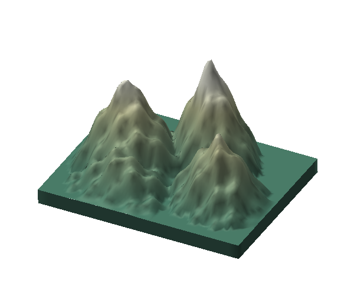

Куда поедем?
Путешествия малыми группами

Исландия
Водопады, чёрный песок и ледниковые лагуны.
Маршрут по днямДоломиты сверху
От озёр в долине до горного перевала. Посмотри программу и выбери, подходит ли тебе темп.
Программа на 6 дней